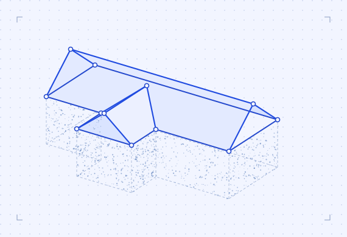

Generalizes to unseen houses
WireDiT’s strong validation performance carried over to houses held out for the private HoHo test, where it ranked first for both roof structure and corner detection.
A Vertex-Slot Diffusion Transformer for 3D Wireframe Reconstruction
Visual Recognition Group, CTU in Prague
How long is the roof ridge? How much space is there for solar panels? If the plans are missing, answering those questions can mean paying for a laser scan or sending up a drone. With WireDiT, the starting point is a series of photos taken while walking around the house.
Each view reveals a different part of the roof. WireDiT uses those clues to estimate its corners and connect them into a metric 3D wireframe. The model has real-world scale, so you can measure a ridge in metres or estimate the area of a roof slope in square metres.
Read the story from CTUWireDiT’s strong validation performance carried over to houses held out for the private HoHo test, where it ranked first for both roof structure and corner detection.
Once the scene inputs are ready, WireDiT estimates the roof in a few seconds on a single NVIDIA A100 GPU, bringing reconstruction close to real time.
The first pass finds the overall roof shape. The second uses a denser sample around the roof to place corners and edges more precisely. Chimneys and small windows remain difficult when only a few points capture them.
Street-level photos provide the inputs to WireDiT. Matching a feature across views locates it in 3D. Depth maps estimate distances, camera poses locate each view, and segmentation labels identify features such as roofs and windows.
Select a smaller set of points that covers the scene while giving roof features priority.
The network’s backbone combines point locations and image-derived labels into a compact representation of the house.
The first flow moves candidate corners towards likely roof vertices in a series of small steps. The model predicts which corners connect.
The green outline marks the crop around the first estimate. Sampling more densely inside it gives the model more detail.
Starting from the first estimate, the second flow adjusts the corners using the denser sample and updates their connections.
Each animation shows the learned flow one step at a time. The orange wireframe moves as WireDiT updates its estimated corner positions. The dots show the observed 3D points, and the blue lines mark the reference roof for comparison.
@inproceedings{skvrna2027wiredit,
title = {{WireDiT}: A Vertex-Slot Diffusion Transformer for 3D Wireframe Reconstruction},
author = {Skvrna, Jan and Purkrabek, Miroslav and Neumann, Lukas},
booktitle = {Proceedings of the IEEE/CVF Winter Conference on Applications of Computer Vision (WACV)},
year = {2027}
}